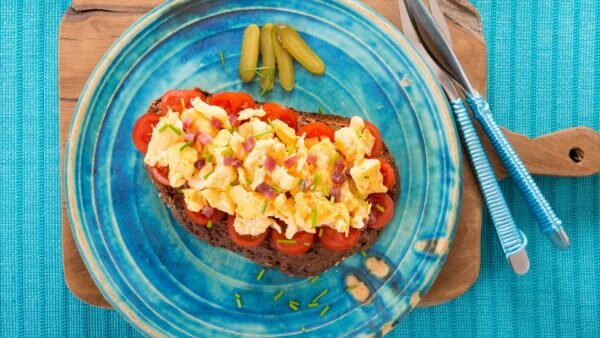
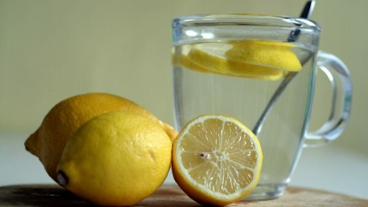

YAĞ ORANINI DÜŞÜRMEK İSTEYENLER İÇİN ALTIN DEĞERİNDE 15 ÖNERİYağ oranını düşürmenin kolay olmadığının bilincindeyiz; özellikle de beslenme ve uyguladığınız egzersizlerde temel değişiklikler yapmanız gerekiyorsa. Yani yağ oranını düşürmek için belli bir emek sarf etmeniz gerekiyor. Tüm yaşam biçiminizi değiştirmek gözünüzü korkutabilir ancak yağ oranını düşürmek için uygulayabileceğinizi daha pratik çözümler olduğunu da bilmelisiniz. Unutmayın; uygulayacağınız bu değişiklikler bir gecede size harika karın kasları kazandırmayacak. Ancak görünür karın kaslarına daha hızlı şekilde kavuşmanızı garanti edecektir. 1. Yemeklerden Önce Su İçin Araştırmalar ana öğünlerden önce 2 bardak su içmenin yağ oranı konusunda yardımcı olabileceğini belirtiyor. Araştırmada 12 hafta süresince yemeklerden önce 2 bardak su içen deneklerin, içmeyenlere kıyasla öğün başına 75-90 daha az kalori tükettikleri ve ortalama olarak daha çok kilo kaybettikleri görüldü. Araştırmacılar yemeklerden hemen önce su tüketmenin sizi daha çok tok hissettirdiğini ve aşırı yemenin önüne geçtiğini belirtiyorlar. Gerçekleştirilen başka bir çalışma, yemeklerden yarım saat önce su içmenin, kilo kaybını 3 ayda % 44 artırdığını göstermiştir 2. Küçük Tabaklarda Yemek Yiyin Tabak boyutlarının ne kadar yemek yiyeceğiniz konusunda son derece etkili olduğunu gösteren sağlam kanıtlar bulunmaktadır. Dirkt yağ yakıcı etki olmasa bile prosiyon boyunuzu kısmak tükettiğiniz kaloriyi kısmak demektir. Araştırmacılar buna Delboeuf Illusion adını veriyorlar. Kendinize yemek hazırlarken sağlıklı yemekler için büyük tabak ve kâseler kullanın (meyve ve sebzeler gibi). Küçük tabaklarda daha az sağlıklı olanlarını tüketmeyi seçin. 3.Mavi Tabaklarda Yemek Yiyin

Yemek tabağınızın boyutunu düşürmek az yemek yemenize yardımcı olur ve buna rengi de dâhildir. Araştırmalar tabak ve yemek arasında yüksek bir kontrast olduğunda insanların daha az yemek yediklerini göstermiştir. Mesela kırmızı soslu bir makarnanın yeşil bir tabakta içerisinde servis edilmesi gibi. Renkler arasında ne kadar yüksek bir kontrast olursa içerindeki yemeği normalden daha büyük görürsünüz. Deneklerin en az yemek yemesini sağlayan tabak rengi ise maviydi. 4. Daha Çok Sebze Tüketin Yağ yakmak kolay değil evet. Belki bu bilgi size gereksiz gelebilir ama büyük miktarda sebze tüketmek size sağlıklı besin maddelerinden ve vitaminlerden daha fazlasını sağlayabilir. Sebze tüketerek yemeklerinizin hacmini ve lif oranını arttırırsınız ki bu da sizi daha çok tok hissettirir. Sebzeler aynı zamanda düşük karbonhidratlı seçenekler olarak da kullanılabilir (pizza hamuru için karnabahar kırıntısı ya da spagetti yerine kabak (jülyen kabak) kullanmak gibi). Lis oranı yüksek yiyecekler yağ yakıcı olarak görülebilmektedir. Bunun sebebi ise sindirim sistemi üzerindeki olumlu etkisidir. Lifler, sindirimin düzenlenmesini ve sağlıklı bir şekilde devam edebilmesini sağlarlar. Diyet dönemlerinde bu sebeple lif yönünden zengin yiyecekler önerilmektedir. 5. Bir Bardak Limonlu Sıcak Su İçin

Sabahları bir bardak limonlu sıcak su içmek sindirim sisteminizi hızlıca çalıştırır ve bağırsaklarınızı uyarır. Bazı uzmanlara göre size doğal olarak bir enerji desteği de sağlayabilir. Şayet limonlu su yüksek kalorili kahveli içeceklerin yerine kullanılırsa da gereksiz kalori tüketmekten kaçınmanıza yardımcı olur. Limonlu su c vitamini yönünden zengindir. Bir adet limonun suyu günlük değerinizin üçte birini karşılar. Araştırmalar yetersiz C vitamini alımının kilo ve yağ oranınızı düşürmede engeller çıkarabileceğini iddia etmektedir. İçeceğinize limon posası eklemek de pektin almanızı sağlar ki pektin sizi tok hissettiren suda çözünen bir liftir. Ayrıca belki bir yağ yakıcı hap olarak adı geçiyor olmasa da c vitamini takviyelerini antrenman öncesi kullanmak eneji için yağ yakımı hızınızı arttıracaktır. |